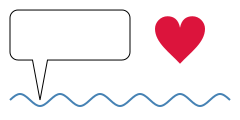
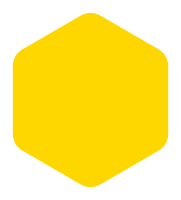
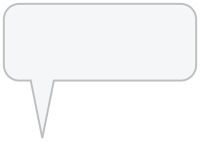

Composite shapes and effects¶
Presets that build a ready-to-draw element from a few numbers: shapes and lines. Shadows, glows and
markers are in the preset libraries. Every preset forwards keyword arguments to the element it builds, so fill=, stroke= and
id= work as they do on the plain classes, and the result takes transforms, place(...) and boolean
operations like any other element.
Preset |
Signature |
Returns |
|---|---|---|
|
|
|
|
|
|
|
|
|
|
|
|
|
|
|
|
|
|
|
|
|
|
|
|
|
|
|
|
|
|
import svgwriter as svg
from svgwriter import paths
doc = svg.Document(240, 120)
doc += paths.callout(10, 10, 120, 50, tail=(40, 100), fill="white", stroke="black")
doc += paths.heart(180, 40, 50, fill="crimson")
doc += paths.wave(10, 100, 220, amplitude=6, wavelength=40, stroke="steelblue")
badge = paths.regular_polygon(180, 85, 14, 6, corner_radius=3, fill="gold")
cutout = badge - paths.cross(180, 85, 14)


Presets carry a theme role, so they follow the document theme: registered shapes
are shape (filled with the palette’s primary color), callout is box, arrow is arrow.line, grid
is grid, spiral and wave are line; outline, dashed_line and dot
are outline, line and dot. Presentation keywords you pass go into the inline
style, so they win over the role. grid, spiral and wave return open paths with fill="none".
wave takes kind="sine" (smooth cubic segments), "square", "triangle" or "sawtooth".
Your own presets¶
A shape preset is a function that returns an element. Decorating it with @svg.preset.shape
registers it under the function’s name (or name=) beside the built-in shapes (the list behind svgwriter shapes), and checks at call time
that it really returns an element. A taken name raises ValueError naming the function that owns it,
built-in shapes included; replace=True replaces one on purpose. svg.preset.shape(role="shape")
gives the built elements a theme role; role=None leaves them unthemed.
import svgwriter as svg
@svg.preset.shape
def badge(cx: float, cy: float, r: float, **kwargs: object) -> svg.Group:
ring = svg.Circle(cx, cy, r, fill="none", stroke="black")
dot = svg.Circle(cx, cy, r / 3, **kwargs)
return svg.Group(ring, dot)
print("badge" in svg.preset.shape.list(), badge(10, 10, 6, fill="gold").tag)
make = svg.preset.shape.get("badge")
svg.preset.shape.unregister("badge")
Follow the conventions of the built-in presets so yours feel the same: position and size as
positional arguments, options as keyword-only arguments, and style attributes passed through
**kwargs to the element. A package can publish presets by defining them with svg.preset.shape in a
module; importing that module registers them. svg.preset.shape.get(name) then looks a preset up by
name, and svg.preset.shape.list() lists everything available. Animation presets work the same way
(see the animation guide), and so do patterns, filters, gradients, markers and
effects (see the Presets guide).
Preset functions¶
Presets of your own, by kind, each found by name.
Every kind is a registry: animations, behaviors, shapes, patterns, filters, gradients, markers and
effects register by decorator (bare, or with name= and replace=) and sizes by a call
(svg.preset.size(name, width, height)); each has list(), get(name) and unregister(name). A
taken name raises an error naming its owner, built-in presets included; replace=True replaces one on
purpose. Registered patterns, filters, gradients, markers and effects join their catalogues
(svg.patterns, svg.filters, svg.gradients, svg.markers, svg.effects) beside the
built-in ones. Packages add presets through the svgwriter.<kind> entry-point groups (see
Registry).
Example
>>> import svgwriter as svg
>>> @svg.preset.animation
... def lift(motion: svg.Motion, *, height: float = 8) -> svg.Motion:
... return motion.move_by(0, -height)
>>> _ = svg.rect(0, 0, 4, 4).animate.lift(height=2)
>>> "lift" in svg.preset.animation.list()
True
>>> _ = svg.preset.animation.unregister("lift")
- class AnimationPresets(kind: str, builtins: Callable[[], object] | None = None, *, group: str | None = None)[source]¶
Bases:
Registry[Callable[[…], Motion | None]]Animation presets: a typed function becomes
element.animate.<name>(...).Decorate
function(motion, *, option=default, ...) -> Motion: the first positional parameter is the element’sMotion, every option is keyword-only with a default, and it returns the motion for chaining (None is accepted). The function stays an ordinary typed function, soMotion.applycalls it with full completion; the name works wherever presets are looked up (element.animate.bob(...),Motion.stagger). Use bare, or withname=andreplace=; a replaced built-in stays reachable as a class attribute (svg.Motion.spin(motion, ...)), so a replacement can wrap it.Examples
>>> import svgwriter as svg >>> @svg.preset.animation ... def bob(motion: svg.Motion, *, height: float = 8, dur: float = 1, begin: float = 0) -> svg.Motion: ... return motion.move_by(0, -height, dur / 2, begin=begin).move_by(0, height, dur / 2, begin=begin + dur / 2) >>> dot = svg.circle(10, 10, 4) >>> _ = dot.animate.apply(bob, height=4).fade_out(begin=1) >>> _ = dot.animate.bob(begin=2) >>> [child.tag for child in dot.children] ['animateTransform', 'animateTransform', 'animate', 'animateTransform', 'animateTransform'] >>> svg.preset.animation(bob) Traceback (most recent call last): ... ValueError: animation 'bob' is already registered by ...bob; pass replace=True to replace it >>> _ = svg.preset.animation.unregister("bob")
- register(item: F, /, *, name: str | None = None, replace: bool = False) F[source]¶
- register(*, name: str | None = None, replace: bool = False) Callable[[F], F]
Register item, or return a decorator that does.
- Parameters:
item (object, optional) – The entry. Given when used as a bare decorator or a call.
name (str, optional) – The name. Defaults to None, which takes the item’s
__name__(functions and classes) orname(themes, presets).replace (bool, optional) – Replace an entry already registered under the name, a built-in one included. Defaults to False.
- Returns:
object – The registered entry, or a decorator that registers and returns it.
- Raises:
ValueError – If the name is taken and replace is False; the message names the owner.
- class BehaviorPresets(kind: str, builtins: Callable[[], object] | None = None, *, group: str | None = None)[source]¶
Bases:
Registry[Callable[[…],None]]Behaviors: Python motion that a
Sceneruns before every frame.Decorate
function(element, seconds, *, option=default, ...) -> None. Attach it withScene.attachorelement.animate.<name>(...)once the element is in a scene’s document. Saving the scene as SVG or PowerPoint bakes the motion into keyframes. Use bare, or withname=andreplace=.Examples
>>> import math >>> import svgwriter as svg >>> @svg.preset.behavior ... def sway(element: svg.Element, seconds: float, *, angle: float = 10, period: float = 2) -> None: ... element.matrix = element.home.matrix ... element.rotate(angle * math.sin(2 * math.pi * seconds / period)) >>> class Flag(svg.Scene): ... width, height, duration = 40, 40, 2.0 ... def build(self, doc): ... doc.rect(15, 5, 10, 30).animate.sway(angle=20) >>> Flag().render(0.5)[:4] b'\x89PNG' >>> _ = svg.preset.behavior.unregister("sway")
- register(item: F, /, *, name: str | None = None, replace: bool = False) F[source]¶
- register(*, name: str | None = None, replace: bool = False) Callable[[F], F]
Register item, or return a decorator that does.
- Parameters:
item (object, optional) – The entry. Given when used as a bare decorator or a call.
name (str, optional) – The name. Defaults to None, which takes the item’s
__name__(functions and classes) orname(themes, presets).replace (bool, optional) – Replace an entry already registered under the name, a built-in one included. Defaults to False.
- Returns:
object – The registered entry, or a decorator that registers and returns it.
- Raises:
ValueError – If the name is taken and replace is False; the message names the owner.
- class DefinitionPresets(kind: str, types: Callable[[], tuple[type, ...]])[source]¶
Bases:
Registry[Callable[[…], Element]]Pattern, filter, gradient or marker presets: functions building a reusable definition.
Each registered function joins its catalogue (
svg.patterns,svg.filters,svg.gradients,svg.markers) behind a wrapper that checks it returns the right element: aPattern; aFilter; aLinearGradient,RadialGradientor a pattern of blends; aMarker. Use bare, or withname=andreplace=.Examples
>>> import svgwriter as svg >>> @svg.preset.pattern ... def bricks(size: float = 8, color: str = "firebrick") -> svg.Pattern: ... return svg.Pattern(svg.rect(0, 0, size, size / 2, fill=color), width=size, height=size, ... pattern_units="userSpaceOnUse") >>> svg.patterns.bricks(4).tag 'pattern' >>> @svg.preset.filter(name="soften") ... def blur(amount: float = 1.5) -> svg.Filter: ... return svg.Filter(svg.FeGaussianBlur(amount)) >>> svg.filters.soften().children[0].tag 'feGaussianBlur' >>> _ = svg.preset.pattern.unregister("bricks"), svg.preset.filter.unregister("soften")
- register(item: Callable[[P], E], /, *, name: str | None = None, replace: bool = False) Callable[[P], E][source]¶
- register(*, name: str | None = None, replace: bool = False) Callable[[Callable[[P], E]], Callable[[P], E]]
Register item, or return a decorator that does.
- Parameters:
item (object, optional) – The entry. Given when used as a bare decorator or a call.
name (str, optional) – The name. Defaults to None, which takes the item’s
__name__(functions and classes) orname(themes, presets).replace (bool, optional) – Replace an entry already registered under the name, a built-in one included. Defaults to False.
- Returns:
object – The registered entry, or a decorator that registers and returns it.
- Raises:
ValueError – If the name is taken and replace is False; the message names the owner.
- class EffectPresets(kind: str, builtins: Callable[[], object] | None = None, *, group: str | None = None)[source]¶
Bases:
Registry[Callable[[…], Element]]Effects: a function styling an element becomes an effect for any element and for ranges of a text.
Decorate
function(element, *, option=default, ...), which sets the paint, filter and animations of the element in place; a text stays text. The registered effect also takes a range of a text (text[4:9]): its characters move to a copy placed just above, where only they show, and the function styles that copy, so filters reach exactly those characters. Effects answer assvg.effects.<name>(target),element.effect(name)andtext[a:b].effect(name). Use bare, or withname=andreplace=; an effect that only suits some elements raises TypeError for the others.Examples
>>> import svgwriter as svg >>> @svg.preset.effect ... def ink(element: svg.Element, *, color: str = "navy") -> None: ... element.fill = color >>> doc = svg.Document(200, 40) >>> str(doc.text("Hello world", x=0, y=30).effect("ink")) '<text x="0" y="30" fill="navy">Hello world</text>' >>> str(doc.circle(5, 5, 4).effect("ink", color="red")) '<circle cx="5" cy="5" r="4" fill="red"/>' >>> layer = ink(doc.text("Hello world", x=0, y=30)[6:11], color="red") >>> layer.get("fill"), layer.children[0].get("visibility") ('red', 'hidden') >>> _ = svg.preset.effect.unregister("ink")
- register(item: Styler[P], /, *, name: str | None = None, replace: bool = False) Effect[P][source]¶
- register(*, name: str | None = None, replace: bool = False) Callable[[Styler[P]], Effect[P]]
Register item, or return a decorator that does.
- Parameters:
item (object, optional) – The entry. Given when used as a bare decorator or a call.
name (str, optional) – The name. Defaults to None, which takes the item’s
__name__(functions and classes) orname(themes, presets).replace (bool, optional) – Replace an entry already registered under the name, a built-in one included. Defaults to False.
- Returns:
object – The registered entry, or a decorator that registers and returns it.
- Raises:
ValueError – If the name is taken and replace is False; the message names the owner.
- class InteractionPresets(kind: str, builtins: Callable[[], object] | None = None, *, group: str | None = None)[source]¶
Bases:
Registry[Callable[[…],None]]Interactions: a function that makes an element respond to the pointer, reused as
el.interact.<name>().Decorate
function(element, *, option=default, ...); it adds hover styles (element.interact.hover) and event-started animations (element.animate.on) in place. Use bare, or withname=andreplace=.Examples
>>> import svgwriter as svg >>> @svg.preset.interaction ... def glow(element: svg.Element, *, color: str = "gold") -> None: ... element.interact.hover(stroke=color, stroke_width=3) >>> doc = svg.Document(width=40, height=20) >>> button = doc.rect(5, 5, 30, 10, id="b").interact.glow(color="orange") >>> "#b:hover { stroke:orange !important;stroke-width:3 !important }" in doc.to_string() True >>> _ = svg.preset.interaction.unregister("glow")
- register(item: F, /, *, name: str | None = None, replace: bool = False) F[source]¶
- register(*, name: str | None = None, replace: bool = False) Callable[[F], F]
Register item, or return a decorator that does.
- Parameters:
item (object, optional) – The entry. Given when used as a bare decorator or a call.
name (str, optional) – The name. Defaults to None, which takes the item’s
__name__(functions and classes) orname(themes, presets).replace (bool, optional) – Replace an entry already registered under the name, a built-in one included. Defaults to False.
- Returns:
object – The registered entry, or a decorator that registers and returns it.
- Raises:
ValueError – If the name is taken and replace is False; the message names the owner.
- class PathEffectPresets(kind: str, builtins: Callable[[], object] | None = None, *, group: str | None = None)[source]¶
Bases:
Registry[Callable[[…], PathData]]Path effects: a function turning path data into new path data, applied as
el.path_effect(name, ...).Decorate
function(data, *, option=default, ...) -> PathData. Withfills=Truethe result is an outline to fill (like a tapered stroke): the element’s stroke paint becomes the fill. Use bare, or withname=,replace=andfills=.Examples
>>> import svgwriter as svg >>> @svg.preset.path_effect ... def shifted(data: svg.PathData, *, dx: float = 5) -> svg.PathData: ... return data.transformed(svg.Matrix.translate(dx, 0)) >>> svg.line(0, 0, 10, 0, stroke="black").path_effect("shifted", dx=3).bounds().x 3.0 >>> _ = svg.preset.path_effect.unregister("shifted")
- register(item: Any = None, /, *, name: str | None = None, replace: bool = False, fills: bool = False) Any[source]¶
Register item, or return a decorator that does.
- Parameters:
item (object, optional) – The entry. Given when used as a bare decorator or a call.
name (str, optional) – The name. Defaults to None, which takes the item’s
__name__(functions and classes) orname(themes, presets).replace (bool, optional) – Replace an entry already registered under the name, a built-in one included. Defaults to False.
- Returns:
object – The registered entry, or a decorator that registers and returns it.
- Raises:
ValueError – If the name is taken and replace is False; the message names the owner.
- class ShapePresets(kind: str, builtins: Callable[[], object] | None = None, *, group: str | None = None)[source]¶
Bases:
Registry[Callable[[…], Element]]Shape presets: a function returning an element, listed by
svgwriter shapes.The registered wrapper checks the return type, so plugins fail loudly, and marks the element with a theme role (
role=, default"shape"; None leaves it unthemed); presentation keywords the caller passes move into the inline style so they keep priority over the role. Use bare, or withname=,role=andreplace=.Examples
>>> import svgwriter as svg >>> @svg.preset.shape ... def disc(cx, cy, r, **kwargs): ... return svg.Circle(cx, cy, r, **kwargs) >>> str(disc(0, 0, 2, stroke="red")) '<circle cx="0" cy="0" r="2" style="stroke:red" class="role-shape"/>' >>> svg.preset.shape(name="star")(disc) Traceback (most recent call last): ... ValueError: shape 'star' is already registered by svgwriter.library.paths._shapes.star (built in); pass replace=True ... >>> _ = svg.preset.shape.unregister("disc")
- register(item: Callable[[P], E], /, *, name: str | None = None, role: str | None = 'shape', replace: bool = False) Callable[[P], E][source]¶
- register(*, name: str | None = None, role: str | None = 'shape', replace: bool = False) Callable[[Callable[[P], E]], Callable[[P], E]]
Register item, or return a decorator that does.
- Parameters:
item (object, optional) – The entry. Given when used as a bare decorator or a call.
name (str, optional) – The name. Defaults to None, which takes the item’s
__name__(functions and classes) orname(themes, presets).replace (bool, optional) – Replace an entry already registered under the name, a built-in one included. Defaults to False.
- Returns:
object – The registered entry, or a decorator that registers and returns it.
- Raises:
ValueError – If the name is taken and replace is False; the message names the owner.
- class SizePresets(kind: str, builtins: Callable[[], object] | None = None, *, group: str | None = None)[source]¶
Bases:
Registry[PageSize]Named canvas sizes for
Document(size=name),Scene.sizeand project files.Register with a call,
svg.preset.size(name, width, height, replace=False). Sizes with a physical unit ("210mm",svg.inch(11)) make documents whoseviewBoxcounts in that unit; plain numbers are pixels. Every name also works with-landscapeand-portraitappended, and appears as an attribute ofsvgwriter.sizewith the name turned into an identifier.Examples
>>> import svgwriter as svg >>> _ = svg.preset.size("poster-50x70", "50cm", "70cm") >>> svg.size.poster_50x70.landscape.width 70.0 >>> svg.Document(size="poster-50x70-landscape").root.get("viewBox").width 70.0 >>> _ = svg.preset.size.unregister("poster-50x70")
Composite shapes (star, gear, heart, callout, wave, …) and the drawing decorator.
Plain elements are built with the classes or their lowercase aliases (svg.circle); this module adds
what the element classes do not provide.
- arrow(x1: float, y1: float, x2: float, y2: float, head: float = 10.0, **kwargs: Any) Path[source]¶
Build a line with an open arrowhead at
(x2, y2).- Parameters:
- Returns:
Path – The arrow as a single path.
See also
svgwriter.library.paths.arrow_markerAn arrowhead as a reusable marker.
Examples
>>> from svgwriter.library.paths import arrow >>> arrow(0, 0, 10, 0).to_string(xml_declaration=False, pretty=False) '<path d="M0 0 L10 0 M1.3397 5 L10 0 M1.3397 -5 L10 0" fill="none" class="role-arrow-line"/>'
- callout(x: float, y: float, width: float, height: float, *, tail: tuple[float, float], corner_radius: float = 8.0, **kwargs: Any) Path[source]¶
Build a speech bubble whose tail points at tail.
- Parameters:
x (float) – Top-left corner of the bubble body.
y (float) – Top-left corner of the bubble body.
width (float) – Size of the bubble body.
height (float) – Size of the bubble body.
tail ((float, float)) – The point the tail touches. The tail leaves the side nearest to it.
corner_radius (float, optional) – Radius of the body’s corners. Defaults to 8.0.
**kwargs – Presentation attributes forwarded to
Path.
- Returns:
Path – The closed bubble, body and tail in one outline.
See also
svgwriter.RectA plain rectangle.
Examples
>>> from svgwriter.library.paths import callout >>> bubble = callout(0, 0, 100, 40, tail=(20, 70)) >>> bubble.bbox.height 70.0

- cross(cx: float, cy: float, size: float, *, thickness: float | None = None, **kwargs: Any) Polygon[source]¶
Build a plus sign.
- Parameters:
- Returns:
Polygon – The 12-sided outline.
- Raises:
ValueError – If thickness is not between 0 and size.
See also
starAnother symbol preset.
Examples
>>> from svgwriter.library.paths import cross >>> len(cross(0, 0, 30).points) 12 >>> cross(0, 0, 30, thickness=6).bbox.width 30.0
- dashed_line(x1: float, y1: float, x2: float, y2: float, **kwargs: Any) Line[source]¶
A dashed line with the theme role
"line".- Parameters:
- Returns:
Line – The line, dashed
4 2; black when written without a document theme.
Examples
>>> from svgwriter.library.paths import dashed_line >>> line = dashed_line(0, 0, 10, 0, stroke="red") >>> line.style["stroke"], line.get("stroke-dasharray") ('red', (4, 2))

- dot(cx: float, cy: float, r: float = 2, **kwargs: Any) Circle[source]¶
A small filled circle with the theme role
"dot".- Parameters:
- Returns:
Circle – The circle.
Examples
>>> import svgwriter as svg >>> doc = svg.Document(10, 10, theme="dark") >>> doc += svg.paths.dot(5, 5) >>> ".role-dot { fill:#b45309" in doc.to_string() True
- drawing(width: float, height: float, **root: Any) Callable[[Callable[[Concatenate[Document, P]], object]], Callable[[P], Document]][source]¶
Turn
f(doc, *args)intof(*args) -> Document.The decorated function receives a fresh
Documentof the given size on every call and draws into it; its return value is ignored.- Parameters:
- Returns:
callable – A decorator producing a function that returns the finished document.
Examples
>>> from svgwriter import Path >>> @drawing(10, 10) ... def dot(doc, color="red"): ... doc.add(Path("M5 5 h1", stroke=color)) >>> isinstance(dot(), Document) True
- gear(cx: float, cy: float, radius: float, teeth: int = 12, **kwargs: Any) Polygon[source]¶
Build a gear outline with square-ish teeth.
- Parameters:
- Returns:
Polygon – The gear; the tooth root sits 15% of radius below the tips.
See also
starAnother composite polygon.
Examples
>>> from svgwriter.library.paths import gear >>> len(gear(0, 0, 20, teeth=8).points) 32
- grid(x: float, y: float, width: float, height: float, *, rows: int | None = None, cols: int | None = None, spacing: float | tuple[float, float] | None = None, **kwargs: Any) Path[source]¶
Build graph paper: horizontal and vertical lines over a rectangle.
Give either rows and cols, which split the rectangle into that many cells, or spacing.
- Parameters:
x (float) – Top-left corner.
y (float) – Top-left corner.
width (float) – Size of the grid.
height (float) – Size of the grid.
rows (int, optional) – Number of cell rows and columns; the grid has one more line of each, border included.
cols (int, optional) – Number of cell rows and columns; the grid has one more line of each, border included.
spacing (float or (float, float), optional) – Distance between lines, or
(horizontal, vertical)distances. Lines start at the top-left corner and stop at the last one that fits.**kwargs – Presentation attributes forwarded to
Path;filldefaults to"none".
- Returns:
Path – All lines as one path.
- Raises:
ValueError – If neither or both of the cell counts and spacing are given, or a count or spacing is not positive.
See also
svgwriter.library.paths.dashed_lineA single dashed line.
Examples
>>> from svgwriter.library.paths import grid >>> str(grid(0, 0, 20, 10, rows=1, cols=2)) '<path d="M0 0 L20 0 M0 10 L20 10 M0 0 L0 10 M10 0 L10 10 M20 0 L20 10" fill="none" class="role-grid"/>' >>> int(grid(0, 0, 20, 20, spacing=5).bbox.width) 20
- heart(cx: float, cy: float, size: float, **kwargs: Any) Path[source]¶
Build a heart made of cubic curves, point down.
- Parameters:
- Returns:
Path – The closed heart.
See also
starA star polygon.
Examples
>>> from svgwriter.library.paths import heart >>> box = heart(50, 50, 40).bbox >>> round(box.width, 1), round(box.height, 1) (40.0, 38.0)
- outline(x: float, y: float, width: float, height: float, **kwargs: Any) Rect[source]¶
An unfilled rectangle with the theme role
"outline".- Parameters:
- Returns:
Rect – The rectangle; unfilled and black-stroked when written without a document theme.
Examples
>>> from svgwriter.library.paths import outline >>> str(outline(0, 0, 5, 5)) '<rect x="0" y="0" width="5" height="5" fill="none" stroke="black" class="role-outline"/>'
- regular_polygon(cx: float, cy: float, r: float, sides: int, *, rotation: float = 0, corner_radius: float = 0, inkscape: bool = False, **kwargs: Any) Polygon | Path[source]¶
Build a regular polygon with optionally rounded corners.
- Parameters:
cx (float) – Center.
cy (float) – Center.
r (float) – Distance from the center to each corner before rounding.
sides (int) – Number of sides, at least 3.
rotation (float, optional) – Clockwise rotation in degrees; the first corner is at the top when 0. Defaults to 0.
corner_radius (float, optional) – Radius of the circular fillet at every corner. Defaults to 0 (sharp).
inkscape (bool, optional) – Build a path carrying Inkscape’s polygon parameters (
sodipodi:type="star"withinkscape:flatsided="true"), editable with Inkscape’s star tool. Defaults to False.**kwargs – Presentation attributes forwarded to
Polygon(Pathwhen rounded or inkscape).
- Returns:
Polygon or Path – The polygon, a path when corner_radius rounds it or inkscape is set.
- Raises:
ValueError – If sides is below 3, or inkscape is combined with corner_radius.
See also
starA polygon with notches.
Examples
>>> from svgwriter.library.paths import regular_polygon >>> len(regular_polygon(0, 0, 10, 6).points) 6 >>> regular_polygon(0, 0, 10, 5, corner_radius=2).tag 'path' >>> regular_polygon(0, 0, 10, 6, inkscape=True).get("inkscape:flatsided") 'true'
- spiral(cx: float, cy: float, *, turns: float, start_radius: float, end_radius: float, **kwargs: Any) Path[source]¶
Build an Archimedean spiral from smooth cubic segments.
The radius changes linearly with the angle. The curve starts to the right of the center and winds clockwise.
- Parameters:
cx (float) – Center.
cy (float) – Center.
turns (float) – Number of revolutions; fractions are allowed.
start_radius (float) – Distance from the center at the start and at the end.
end_radius (float) – Distance from the center at the start and at the end.
**kwargs – Presentation attributes forwarded to
Path;filldefaults to"none".
- Returns:
Path – The open spiral.
- Raises:
ValueError – If turns is not positive.
See also
waveA smooth line along a straight axis.
Examples
>>> from svgwriter.library.paths import spiral >>> round(spiral(0, 0, turns=2, start_radius=0, end_radius=20).bbox.width) 35
- star(cx: float, cy: float, outer: float, inner: float | None = None, points: int = 5, *, corner_radius: float = 0, inkscape: bool = False, **kwargs: Any) Polygon | Path[source]¶
Build a star with points tips, pointing up.
- Parameters:
cx (float) – Center.
cy (float) – Center.
outer (float) – Radius of the tips.
inner (float, optional) – Radius of the notches. Defaults to half of outer.
points (int, optional) – Number of tips. Defaults to 5.
corner_radius (float, optional) – Radius of the circular fillet at every tip and notch; it shrinks where the star is too small for it. Defaults to 0 (sharp).
inkscape (bool, optional) – Build a path carrying Inkscape’s star parameters (
sodipodi:type="star"), so the star stays editable with Inkscape’s star tool. Defaults to False.**kwargs – Presentation attributes forwarded to
Polygon(Pathwhen rounded or inkscape).
- Returns:
Polygon or Path – The star, a polygon unless corner_radius or inkscape makes it a path.
- Raises:
ValueError – If inkscape is combined with corner_radius.
See also
regular_polygonA polygon without notches.
Examples
>>> from svgwriter.library.paths import star >>> len(star(50, 50, 40).points) 10 >>> round(star(50, 50, 40, corner_radius=4).bbox.height, 1) 64.0 >>> star(50, 50, 40, inkscape=True).get("sodipodi:type") 'star'
- wave(x: float, y: float, width: float, *, amplitude: float, wavelength: float, kind: str = 'sine', **kwargs: Any) Path[source]¶
Build a periodic line along a horizontal axis.
The sine wave is made of cubic segments, one per half wavelength; the other kinds are polylines. The wave is cut at width, so it need not hold a whole number of wavelengths.
- Parameters:
x (float) – Start of the axis;
yis the centerline.y (float) – Start of the axis;
yis the centerline.width (float) – Length of the wave along the axis.
amplitude (float) – Distance from the centerline to the crests.
wavelength (float) – Length of one full cycle.
kind ({"sine", "square", "triangle", "sawtooth"}, optional) – Shape of the wave. Sine and triangle start on the centerline and rise first; square starts at the crest; sawtooth starts at the trough and ramps up. Defaults to
"sine".**kwargs – Presentation attributes forwarded to
Path;filldefaults to"none".
- Returns:
Path – The open wave.
- Raises:
ValueError – If kind is unknown or width or wavelength is not positive.
See also
spiralA smooth curve around a center.
Examples
>>> from svgwriter.library.paths import wave >>> box = wave(0, 20, 100, amplitude=10, wavelength=50).bbox >>> round(box.height, 1) 20.0 >>> len(wave(0, 0, 40, amplitude=5, wavelength=20, kind="square").d) 8